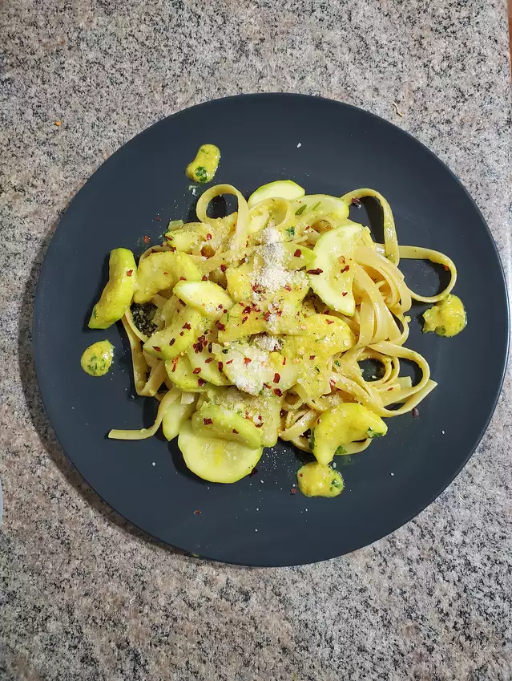

Description
Pasta with zucchini in a garlicky sauce. Serve with crusty bread and a chilled white wine, if desired.
Ingredients
- 1 pound rotini pasta
- 5 small zucchini, sliced
- ⅓ cup olive oil
- 4 cloves garlic, minced
- 1 pinch crushed red pepper flakes
- ⅓ cup chopped fresh parsley
- salt and pepper to taste
- ½ cup grated Parmesan cheese
Directions
Step 1
Bring a large pot of lightly salted water to a boil. Add pasta and cook for 8 to 10 minutes or until al dente. Drain and reserve.
Step 2
Fill a medium sauce pan with lightly salted water. Add zucchini and bring to a boil; boil for 10 minutes or until tender.
Step 3